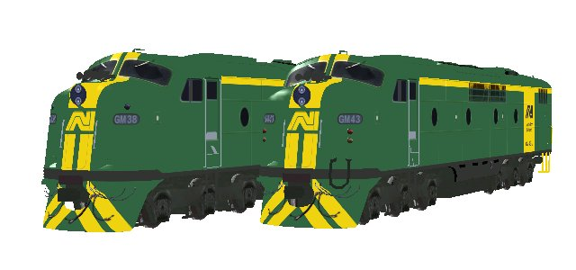
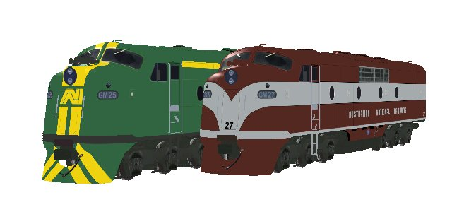

Commonwealth Railways's GM Class (CR and ANR)
original 3d model design and textures by James Brook
Overview
Packages (three) contain
- GM32, GM34 (Commonwealth Railways GM12 class) - as built
- GM38, GM43 in Australain National livery
- GM25, GM27 in Australian National Railways livery
Models contain upgraded physics by team-ALCO's Ian Bowles.


